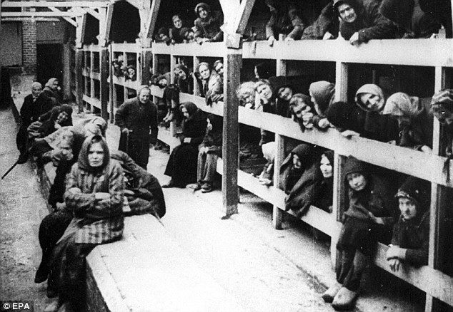

More than physically, it was harder on me emotionally when I was captured. I’d worked hard to keep my brothers safe for almost 2 years. We’d traveled every day, every night, trying to find a hiding place where we would be safe. I let my family down, my mother, father, and even more, Abigail. I know she trusted me to keep everyone safe. I felt that I was a total letdown to the family.
It was the Autumn of 1943. There were leaves flying everywhere, we had finally made it to the Netherlands. Little did we know that the Germans took that over. Our plan was fail after fail but I refused to give up hope. I knew that I was the boys’ last chance of surviving. I could see the exhaustion on their faces as we traveled long days and nights, with little food and water.
One day, they asked me, “How does all of Germany hate us? Not everyone will hate Jews.. right?” I responded, “People generally see what they look for, and hear what they listen for. Most people are scared and will do whatever they think will spare their lives. They listen for the hatred to Jews and slowly get into it even more and more.” I could feel the despair clinging to me, I was trying my best to not get us caught, but it was getting a lot harder to keep up with their German ways.
They had found us, on October 15th, 1943, hiding under shelves in an old warehouse in Rotterdam. We were half starved, and exhausted. The soldiers left us no pity. They pointed their large guns at us and I stepped in front of the boys. The guy yelled, “Move!” I think they could see me trembling that day. They grabbed us roughly and shoved us into a car, where we were then taken to a train that was so crowded we could barely breathe. Our destination was one of the worst, the Auschwitz Concentration Camp.
When we arrived, boys and girls were separated, leaving me screaming for my brothers and the soldiers getting upset at me for doing so. The barracks were dirty and crowded, with people everywhere you step. There was barely any room to sleep, in the barracks and there was a vile odor when you walked in. Most of the women and kids were sick and got sick very soon as well. Bugs crawled on the floor, over people, and there were masses of them over those who had died last night.
“The one thing that doesn't abide by majority rule is a person's conscience.” I felt like many of the Nazis could have fought back. I’m sure some of them don’t agree with Hitler’s ways. “They're certainly entitled to think that, and they're entitled to full respect for their opinions…” I can’t stop the people who don’t like us Jews, but what the Nazis are doing doesn’t deserve any respect. I wish that the war never started, and that Hitler didn’t exist. We are a minority compared to the Germans, but we would never do a thing to them. The life at the concentration camp was hard.
Every morning, there was a role call lasting hours beginning at 03:00, then breakfast was only a hot drink, with lunch being a thin meatless vegetable soup, and dinner a small bit of bread. I was hungry every day and I always felt weak and nauseous. I was one of the lucky ones, I only had to play cheerful music, being part of the Women's Orchestra of Auschwitz. Every day I saw kids being taken to graveyards where they would be shot and killed, and other prisoners taken to small rooms in the basement where they would slowly suffocate.
“It was times like these when I thought my father, who hated guns and had never been to any wars, was the bravest man who ever lived.” If it were up to me, I would make an army to fight. But it wouldn’t be right. My uncle had told me that my father was peaceful, he would never fight a war, I admire him for being so brave in this grave situation.
Lice spread everywhere with other diseases. I was going to be killed, but the camp was freed by the Russians. After the war, I moved to America, being accepted refugee status. There, I started a new life and began my recovery. Today, I am a doctor in Massachusetts, and I am slowly recovering from my past memories.

An image of the awful barracks that the Jews had to live in.
Image site: https://www.pinterest.com/pin/87890630205185450/